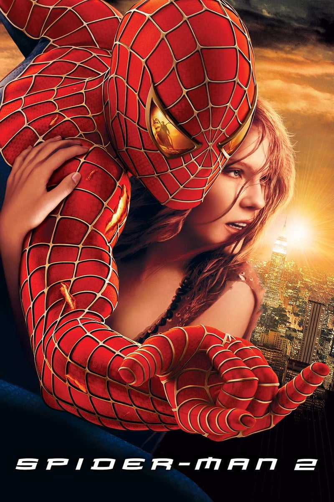
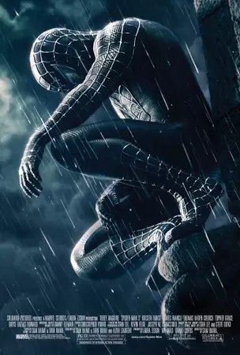
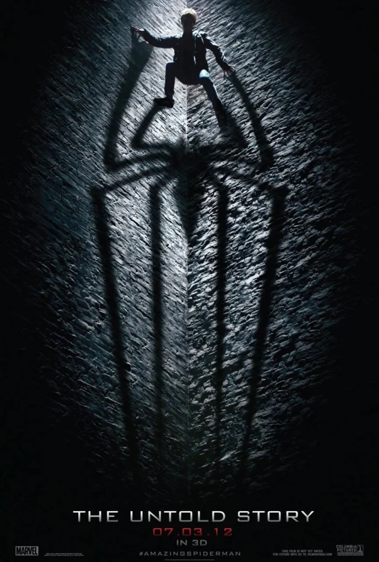
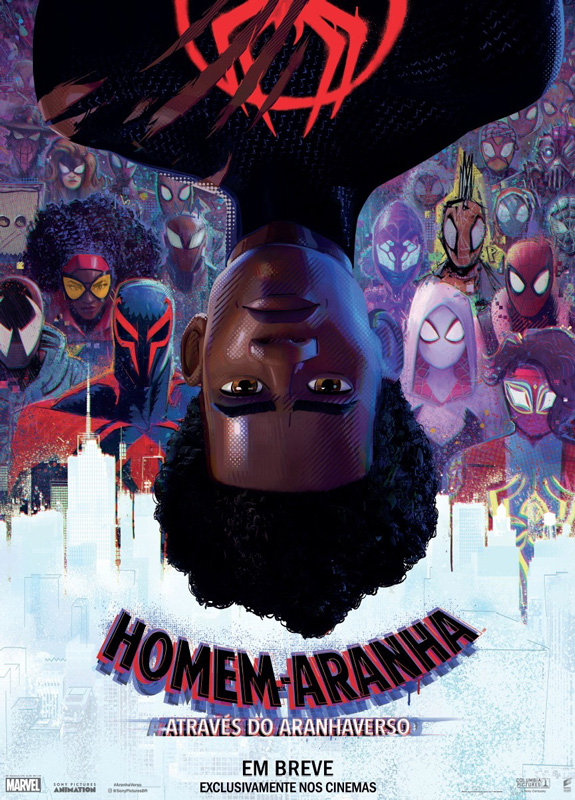
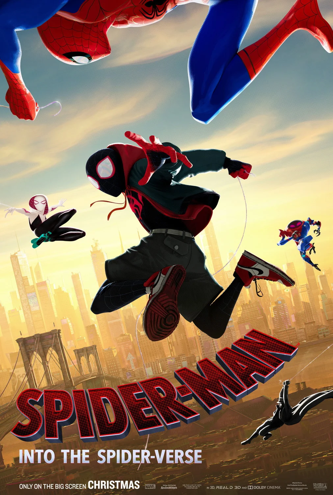
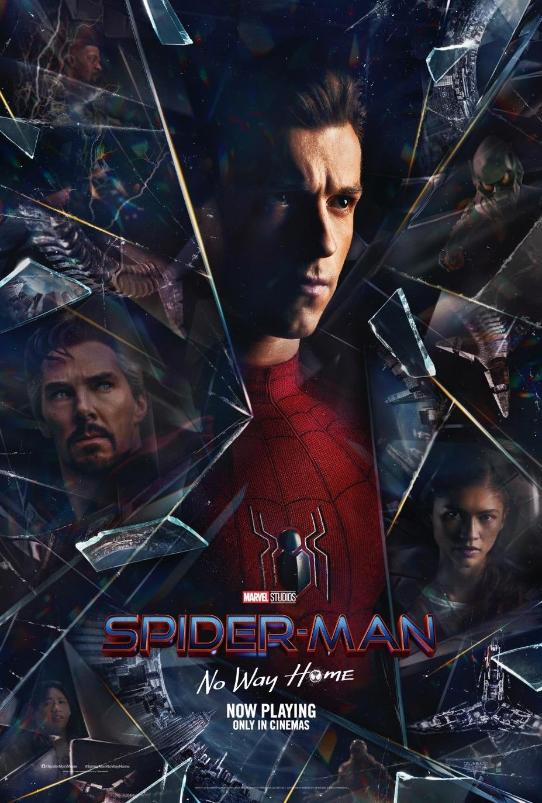

O Dr. Otto Octavius é transformado em Doutor Octopus quando uma falha em uma experiência de fusão nuclear resulta em uma explosão que mata sua esposa. Ele culpa o Homem-Aranha pelo acidente e deseja vingança. Enquanto isso, o alter ego do herói, Peter Parker, perde seus poderes.

O relacionamento entre Peter Parker e Mary Jane parece estar dando certo, mas outros problemas começam a surgir. A roupa de Homem-Aranha torna-se preta e acaba controlando Peter - apesar de aumentar seus poderes, ela revela e amplia o lado obscuro de sua personalidade.

O jovem Peter Parker quer saber mais sobre sua origem. Ele encontra uma pasta que pertenceu ao seu pai e tenta descobrir por que seus pais desapareceram.

Depois de se reunir com Gwen Stacy, Homem-Aranha é jogado no multiverso. Lá, o super-herói aracnídeo encontra uma numerosa equipe encarregada de proteger sua própria existência.

Após ser atingido por uma teia radioativa, Miles Morales, um jovem negro do Brooklyn, se torna o Homem-Aranha, inspirado no legado do já falecido Peter Parker.

Peter Parker tem a sua identidade secreta revelada e pede ajuda ao Doutor Estranho. Quando um feitiço para reverter o evento não sai como o esperado, o Homem-Aranha e seu companheiro dos Vingadores precisam enfrentar inimigos de todo o multiverso.